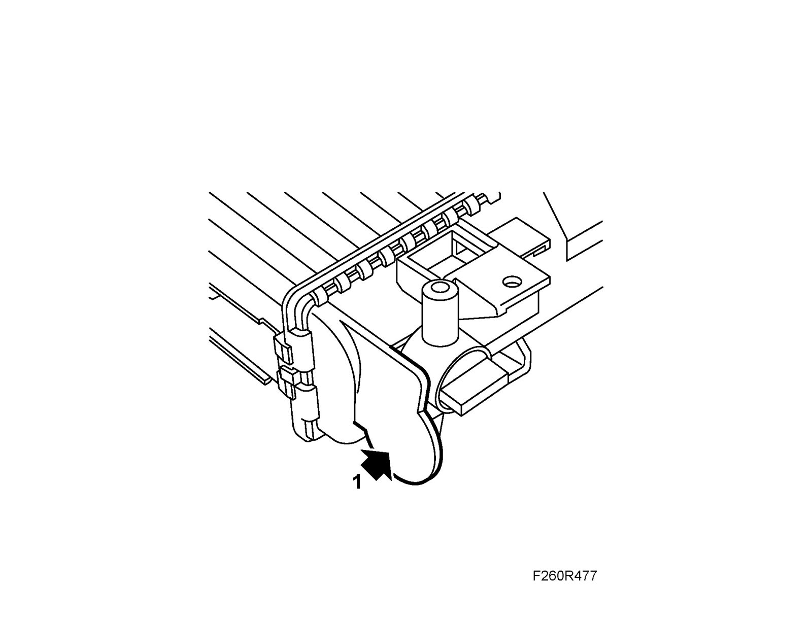
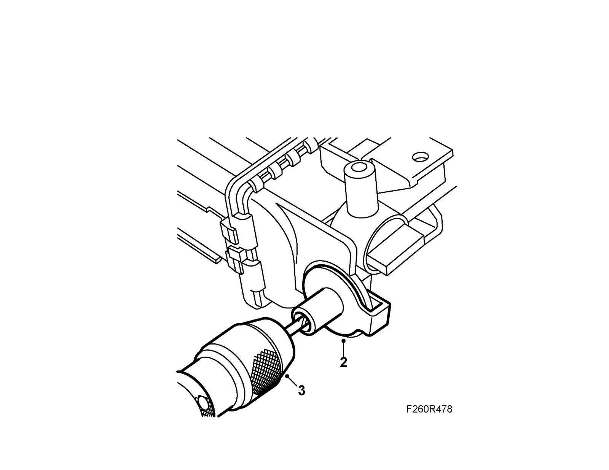
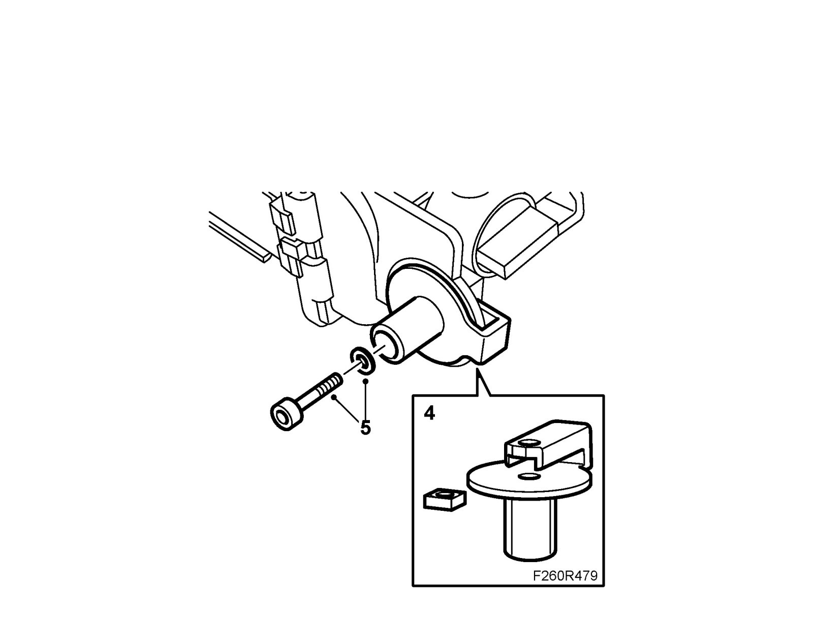

Lower Mounting, Radiator
Lower mounting, radiatorChange
1. Even out the fracture surface.

2. Fit the new mounting on the flange.

Important
Be careful not to damage the radiator end when drilling the hole.
3. Drill a hole through the mounting and flange using a 4 mm bit.
4. Remove the mounting from the flange. Fit the nut in the mounting.

5. Fit the mounting to the flange with washer and bolt.
Tightening torque 3.5 Nm (2.6 lbf ft)